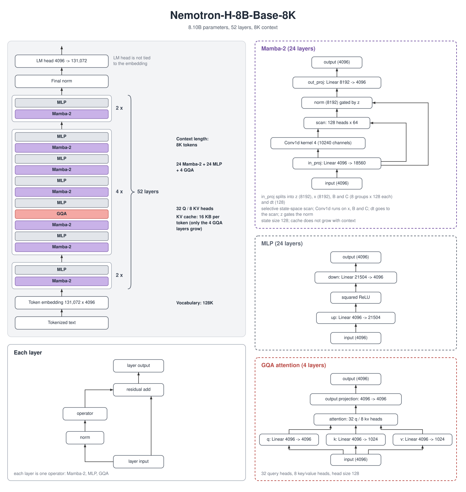

Nemotron-H-8B-Base-8K
nvidia/Nemotron-H-8B-Base-8K · released 19 Mar 2025 · analysed at commit 94ea861e00
1 of 4 key facts verified
- total parameters
- 8.10B
- active per token (dense)
- all
- layers
- 52
- context tokens
- 8K
- cache per token
- 16.00 KiB
Overview
Dense: Mamba-2 in 24 of 52 layers, plus MLP 24, Global attention 4.
Architecture
Drawn by Gemini from verified fields, passed 24 of 24 checks

Where every number comes from
Each fact is read from the model's own files. Verified means two independent sources agree.
| Fact | Value | Sources | Status |
|---|---|---|---|
| Total parameters | 8.10B (8,100,852,736) | safetensors headerssum of tensor shapes | one source |
| Layers | 52 | config.json, safetensors headersnum_hidden_layers; highest layer index + 1 | verified |
| Layer mix | Mamba-2 24, MLP 24, Global attention 4 | config.jsonhybrid_override_pattern | one source |
| Context length | 8,192 | config.jsonmax_position_embeddings | one source |
| Hidden size | 4,096 | config.json, safetensors headershidden_size; embed_tokens columns | verified |
| Vocabulary | 131,072 | config.json, safetensors headersvocab_size; embed_tokens rows | verified |
| Attention type | GQA | computed from published fieldsnum_key_value_heads(8) vs num_attention_heads(32) | one source |
| Attention heads | 32 | config.jsonnum_attention_heads | one source |
| KV heads | 8 | config.jsonnum_key_value_heads | one source |
| Head dim (q/k) | 128 | config.jsonattention_head_dim | one source |
| Activation | relu2 | config.jsonmlp_hidden_act | one source |
| Block layout | standalone | config.jsonhybrid_override_pattern (one operator per block) | one source |
| Decoder type | Hybrid (dense) | config.jsonhybrid_override_pattern | one source |
| Gated FFN | no | safetensors headersFFN gate/up/down tensor layout | one source |
| FFN hidden size | 21,504 | config.json, safetensors headersintermediate_size; feed_forward.w1 rows | verified |
| Mamba activation | silu | config.jsonmamba_hidden_act | one source |
| Mamba conv channels | 10,240 | computed from published fields, safetensors headersmamba heads*head_dim + 2*groups*state_size; mixer.conv1d channels | verified |
| Mamba conv kernel | 4 | config.jsonconv_kernel | one source |
| Mamba groups | 8 | config.jsonn_groups | one source |
| Mamba head dim | 64 | config.jsonmamba_head_dim | one source |
| Mamba num heads | 128 | config.jsonmamba_num_heads | one source |
| Mamba state size | 128 | config.jsonssm_state_size | one source |
| Model type | nemotron_h | config.jsonmodel_type | one source |
| Released weights | bfloat16 | config.jsondtype | one source |
| Tied embeddings | no | config.jsontie_word_embeddings | one source |
| Cache per token | 16,384 B | ArchWatch calculatorbf16; growing part per token (sliding-window and constant states excluded), from published fields | computed |
How much memory does the cache need?
One sequence, bf16, weights not included. Pick a context length.
226 MiB at 8,192 tokens
Global attention layers (4) add 16,384 B per token; the 24 Mamba-2 layers keep a fixed-size state (97.88 MiB) that does not grow with context.